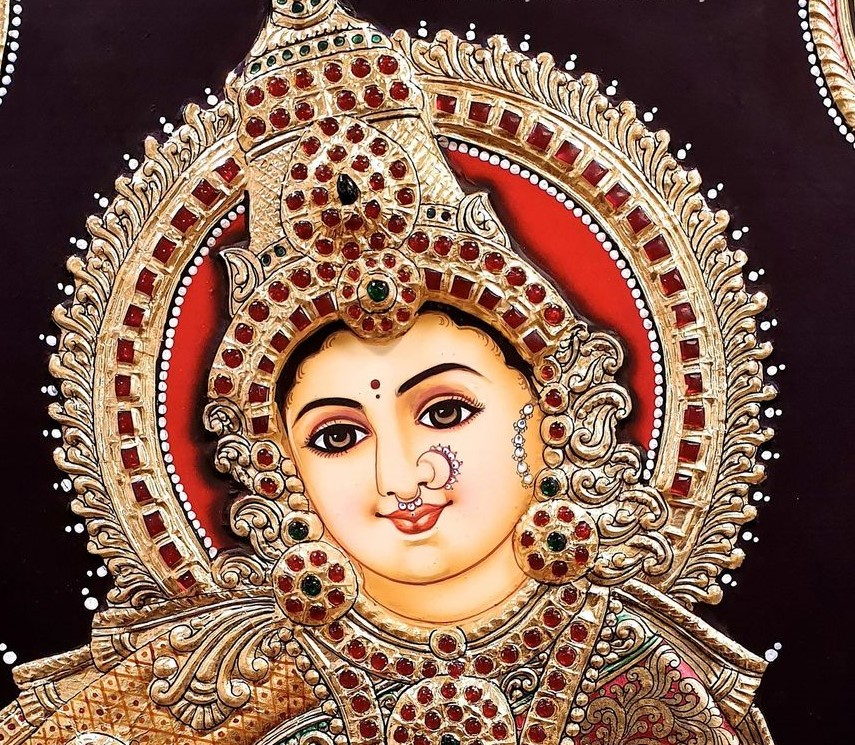

Folk art is linked with the forgotten art of story telling. Paintings are used to depict the visual counterpoint in narration in every region of India. Art forms of Rajasthan, Gujarat and Bengal narrate the myths and legends of local heroes and deities and construct a kaleidoscopic image of our glorious past and rich cultural heritage. Each work is a complete narration in itself, giving us a glimpse of the past, which has been kept alive by talent and devotion of our artists.
'Religious paintings with a royal heritage' is the best definition for Thanjavur paintings, now better known as Tanjore paintings. Tanjore painting ranks among the greatest traditional art forms for which India is noted worldwide. Their themes are fundamentally mythological. These religious paintings demonstrate that spirituality is the essence of creative work. Few art forms match the beauty and grace of Tanjore paintings.
Originating in Tanjavur about 300 kms from Chennai, this form of art developed at the height of cultural evolvement achieved during the rule of mighty Chola empire. The art form evolved and flourished under the patronage of successive rulers. These magnificent paintings adorned the royal dwellings and later found their way into every household.
An extraordinary visual amalgamation of both art and craft, Tanjore paintings mainly consist of themes on Hindu gods and goddesses, with figures of Lord Krishna in various poses and depicting various stages of his life being the favourite. The characteristics of the Tanjore paintings are their brilliant colour schemes, decorative jewellery with stones and cut glasses and remarkable gold leaf work. The liberal use of gold leaf and precious and semi-precious stones presents a splendid visual treat. These give life to the pictures such that the pictures come alive in a unique way. Adorned with rubies, diamonds and other precious gemstones, and trimmed with gold foil, Tanjore paintings were true treasures. Nowadays, however, semi-precious stones are used in place of real ones, but the use of gold foil has not altered. The shine and glean on the gold leaves used by the Tanjore style paintings, lasts forever.
